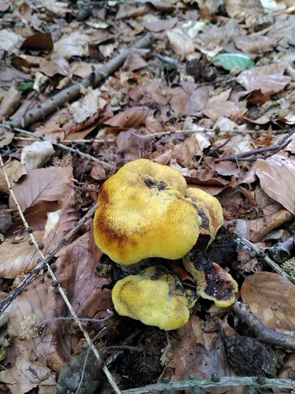

针叶树根旁长出黄边绒面莲座状菌体
针叶树旁低矮的莲座状菌体可能连着地下木质根。年轻的绒盖菌体常有鲜黄生长边，中心颜色较深、表面似绒。

现场检查
拍下新鲜菌体上表面。若无需扰动根区即可看到下方孔面，也一并拍摄。老菌体转深褐，易被当作土块或风化木片。
鉴别相似表现
记录最近的活针叶树和残桩。草地菌体可能连着地下死根，最近的树干未必是它的寄主。
处理选择
若菌体与活树相关，尤其靠近建筑，应请树艺师评估根部和干基腐朽。菌体大小和数量无法换算剩余木材强度。
后续复查
在示意图标位，下季复查原处有无新菌体。去年的暗褐残体与新黄边菌体可能对应同一处木材腐朽。
寄主检查要点
记录菌体距树干的距离和方位。落针盖住上季菌体后，仍能根据记录找回原位。
若绒面莲座状菌体看似从草坪中长出，拍全景时把附近针叶树和老树桩纳入画面。地下木材可解释这种位置。不要挖开承重根追查连接处，可请树艺师现场判断。